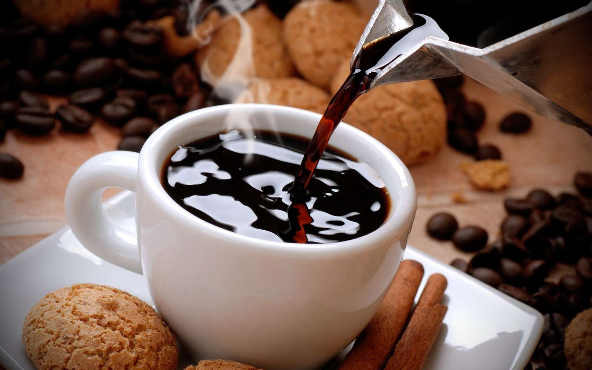

Brasserie

Pizzeria

Brasserie |
Pizzeria |
Fast-Food |
Café & Bar |
Que vous ayez envie de manger un plat gastronomique, une pizza ou un burger...pas de soucis, vous seriez très bien servis dans ménilmontant et belleville. "Il y'a autant de restaurants dans la zone que d'habitants", dans chaque coin de rues vous pourriez voir au dessus de votre tête le nom d'un restaurant souvent particulier et original. Selon vos goûts et vos envies, n'hesitez pas à vous rendre dans un de ces restaurants, on vous promets que vous ne seriez pas deçu.
Si vous voulez néanmoins découvrir de nouvelles cuisines, ménilmontant et belleville régorgent plus de restaurants de gastronomies divers (Oriantale, Asiatique, Italien, Afrique Saharien et Subsaharien...) que les autres quartiers de Paris. On sait également que des fois vous n'avez pas trop faim et que vous avez juste envie d'un bon café ou d'un verre pour digerer votre précedent répas, dans ce cas vous trouverez des cafés et des bars à chaque centaine de mètre.